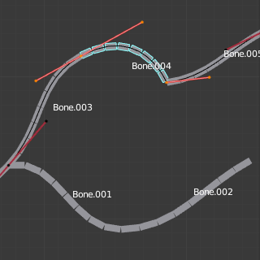

柔性骨骼
参考
- 模式:
所有模式
- 面板:
柔性骨骼（B-Bones）是取代许多小型刚性骨骼长链的简单方法。弯曲骨骼主要用于脊柱模型或面部骨骼。
技术细节
Blender将柔性骨骼看成通过骨骼关节的贝塞尔曲线一部分. 每个 段数 将弯曲并滚动以遵循这看不见的贝塞尔曲线代表此的曲线细分点。曲线两端的控制点是骨骼的端点。样条骨（B-bones）的形状可以是受控制使用一系列的属性或间接邻近的骨骼（即第一个子级和父级）. 骨骼两端的手柄以控制曲率。
当使用 B-bone 作为约束目标 数据 ID 会提供跟随曲线的选项。
Note
但是，如果将骨骼用作目标而不是变形网格物体，则只有 骨架 和 复制变换 约束将使用包括滚动和缩放的完整变换。
显示
只有骨骼视图显示设置为为 样条骨（B-bones） 才能看到这些段数。
当视图显示不是 样条骨（B-bones） 时，即使骨骼段数仍然存在并且有效，骨骼总是显示为刚性棍形。这意味着即使在例如 八面体 可视化的显示方式，如果链中的一些骨头有分段，他们仍然会使他们的几何体平滑变形...
静置姿态
柔性骨骼（B-bones）的初始形状可以在编辑模式中定义为该骨骼的静置姿态。这对弯曲的面部特征（如弯曲的眉毛或嘴巴）很有用。
B-Bones 有两组弯曲骨骼属性 -- 一组用于编辑模式（即静置姿态/基础装备），另一组用于姿态模式 -- 将它们的值相加或相乘以获得最终变换。
例子
在编辑模式下只有一个段的骨骼。 |

贝塞尔曲线叠加在链上，其手柄放置在骨骼的两端。 |

相同的骨架在物体模式。 |
在图 在编辑模式下只有一个段的骨骼。 我们连接了三个骨骼，每个骨骼由五段组成。
看图。相同的骨架在物体模式。，我们可以看到骨骼的细分如何平滑地 "融合" 到彼此，即使是产生了滚动。

骨架在姿态模式下显示效果：Bone.003 有一段，Bone.004 有四段，Bone.005 有十六段。
选项
柔性骨骼面板。
- 分段
给定骨骼细分为的节段数。节段是小的，刚性的，连接的子级骨骼，在根部和尖端之间插入。此设置越高，骨骼 "弯曲" 越平滑，但姿势计算越重。
- 显示尺寸 X, Z
在 B-Bones 模式下渲染骨架时，控制骨骼段的可见厚度。
- 首端/尾端弯曲 X, Y, Z
将偏移应用于垂直于骨骼主（Y）轴的平面上的曲线手柄位置。结果，手柄每轴（XZ）移动得离其原始位置更远，从而导致曲线弯曲。
- 滚入，滚出
滚动值（或围绕骨骼的主 Y 轴扭曲）在开始和结束滚动值之间按段进行插值。它作为旋转偏移应用于由手柄骨骼定义的旋转的顶部。
- Inherit End Roll 继承尾端扭转
如果启用，头端 骨骼（默认连接父项）的 滚入 值将添加入到当前骨骼的 滚出 设置中。
- 首端/尾端缩放 X, Y, Z
调整 X 轴和 Z 轴的每个线段的厚度或沿 Y 轴引入不均匀间距的比例因子。与 Roll 类似，它是按段插值的。
由于所有分段仍然在Y方向上均匀缩放以适应曲线的实际长度，因此实际上只有 缩放入Y 和 缩放出Y 之间的比率才重要。
- 淡入、淡出
The Ease In/Out number fields, change the "length" of the "auto" Bézier handle to control the "root handle" and "tip handle" of the bone, respectively. These values are proportional to the default length, which of course automatically varies depending on bone length, angle with the reference handle, and so on.
虽然缓动是一个类似缩放的值，但编辑模式和姿态模式版本的值会被添加，因此它们默认得到相应的起始值 1 和 0 。
渐入/渐出设置示例，带有实物化的贝塞尔曲线。 
Bone.004的渐入和渐出值都为默认值（1.0）。
 Bone.004的渐入的值为2.0，渐出的值为0.0。
{kind=link}
- 缩放缓动
如果启用，则最终的缓动值将隐式乘以相应的 Scale Y 值。
自定义控制柄
B-Bones可以使用自定义骨骼作为其参考骨骼控制柄，而不是仅使用连接的父/子骨骼。
- 起始/结束控制柄
从以下选项中指定控制柄的类型：
- 自动:
选择骨骼的连接父级（或者连接的子级骨骼）作为控制柄。计算根据下面的 绝对 控制柄类型完成。
- 绝对:
贝塞尔手柄由手柄骨的头部（尾部）相对于当前骨骼的头部（尾部）的 位置 控制。请注意，要使其正常工作，这些骨骼之间必须有非零距离。如果手柄也是B-Bone，则应用额外的处理以进一步平滑过渡，假设骨骼实际上形成了一条链。
- 相对:
贝塞尔手柄由手柄骨的头部（尾巴）与其静置姿态的 偏移 控制。由于接近零偏移的数值稳定性问题，不建议使用此类型。
- 切向 (正切):
贝塞尔手柄由手柄骨骼的 方向 控制，与其位置无关。
- 自定义控制柄
对于 自动 以外的控制柄类型，必须手动选择用作控制柄的骨骼。切换到自定义句柄类型可以不选择骨骼来有效地禁用控制柄。
这种相关性应用于带有 自动 句柄的连接链中，两个骨骼作为控制柄相互引用是有效的。
- 缩放X/Y/Z/Ease
如果启用，最终缩放和/或缓解值将乘以手柄骨的相应局部缩放通道。此步骤独立于 缩放缓动 而应用，并且不会与其交互，即启用* Y 和 *缩放缓动 不会替换 缓动 切换。这些切换可以更有效地替换多达八个微不足道的驱动程序，将段比例数据从手柄骨骼传递到B-Bone选项属性中。

柔性骨骼属性的效果。
左起：1) 曲线 X/Y 偏移、2) 首端/尾端缩放、3) 滚入/滚出